Mucho gusto, mi nombre es Sherley Avigail Machán Pérez. Nací el 16 de Abril de 2005 en la ciudad de Guatemala y te mostrare un poco de mi vida.
Mi familia está conformada por 4 integrantes. Mi madre que se llama: Lourdes Eugenia Pérez Nij, ella nació el 11 de septiembre de 1984, actualmente ella tiene 40 años. Conoció a mi padre a la edad de 15 años ya que ella laboraba en ese entonces en una tortilleria en el mismo lugar en donde vivía mi papá. Se juntarón cuando mi madre tenía 20 años, a la edad de 21 años mi madre se embarazó de mi. Mi padre se llama: Juan David Machán Cándido, el nació el 26 de Mayo de 1976, actualmente el tiene 48 años. Cuando nací el tenia la edad de 29 años. Solo tengo una hermana y es menor que yo, ella se llama: Melanie Dayana Machán Pérez, ella nació el 20 de Agosto de 2009, ella tiene 15 años cursa tercero básico
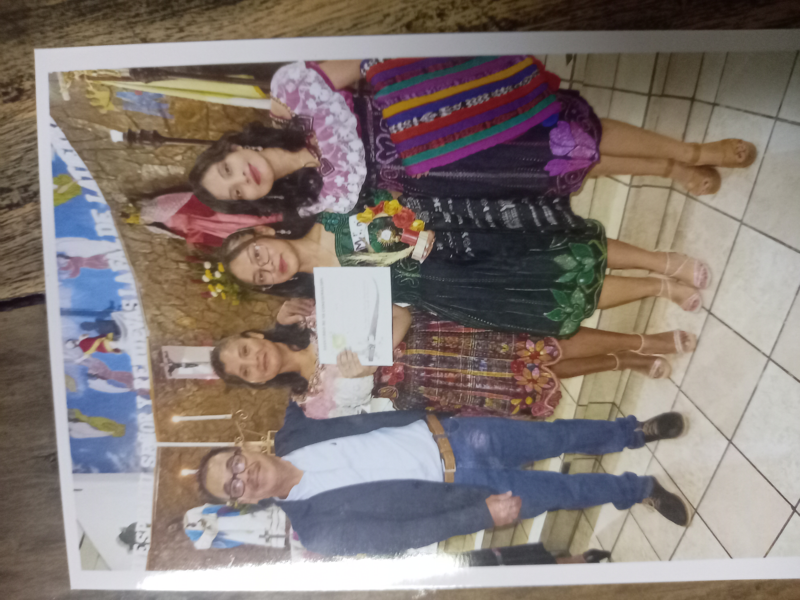Nací el 16 de Abril de 2005 a las 07:11 de la mañana, se que viví grandes momentos con mi familia y que lamentablemente no puedo recordar, pero si tengo memoria o fotografias de algunos momentos lindos que pase con ellos. Mi padre baila convite y tengo varias fotos con el y me impresiona los años que el lleva ya con esta tradición, el siempre fue uno que nos inculcó el gusto por la marimba y el baile por eso en cada convite que realizaba me sacaba a bailar y nunca faltaba la foto del recuerdo
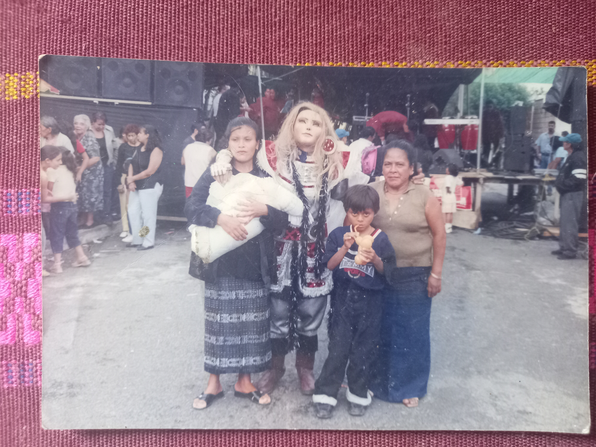 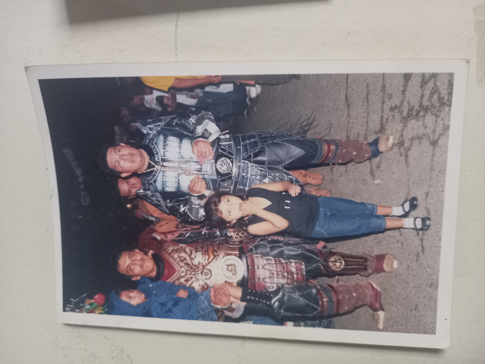
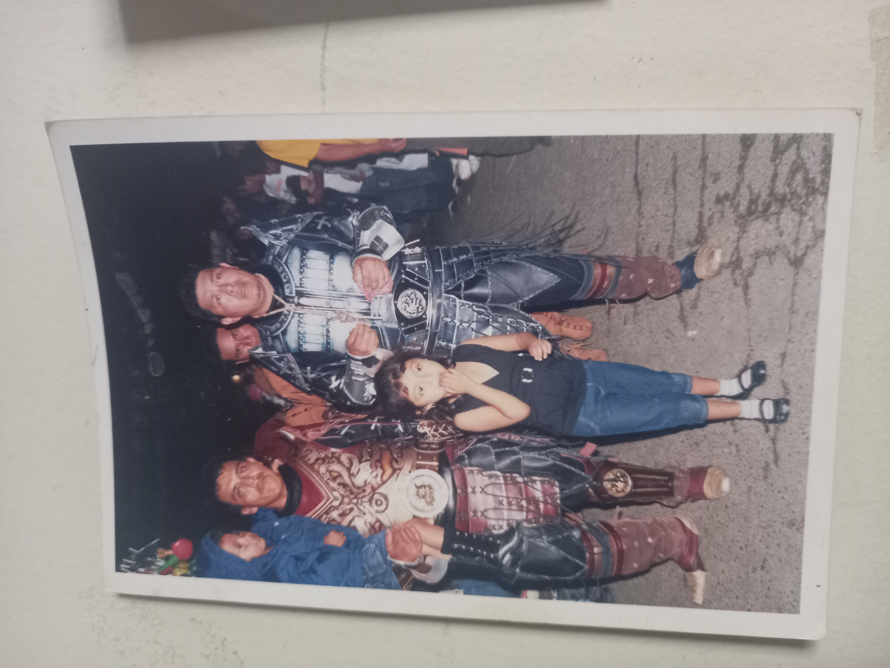

Mi familia siempre acostumbraba que los 12 de Diciembre el Día de la Virgen de Guadalupe teniamos que visitar el Santuario de la Virgen de Guadalupe. 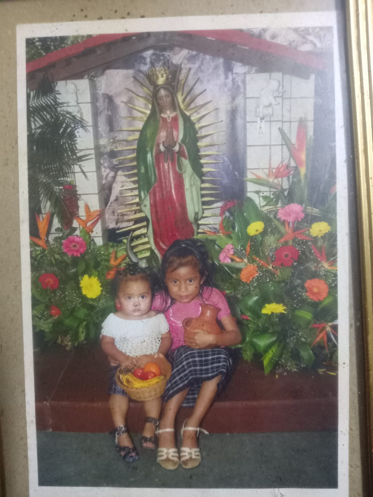 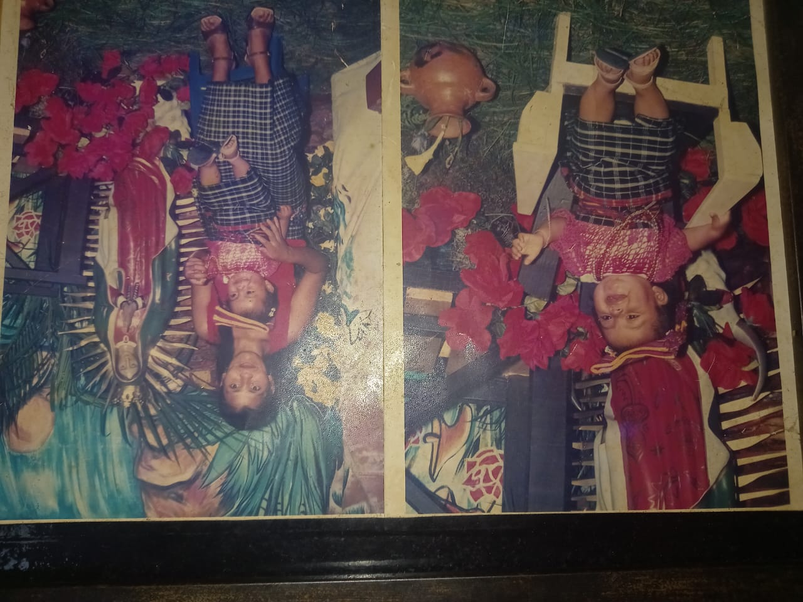 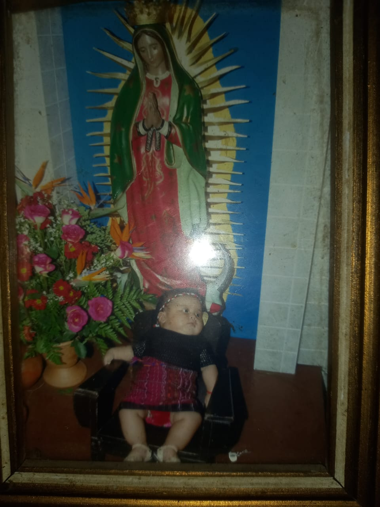
En el año 2009 pasaron muchos sucesos importantes en mi vida entre a estudiar y realizé muchas actividades, pero también está el nacimiento de mi única hermana. Yo no sabía que mi madre estaba embarazada, pero si recuerdo una vez en el mercado que ella vió un trajesito gris que le gusto tanto que lo compró y uso mi hermana a la hora de salir del hospital recuerdo muy bien que era una bebesita muy gordita, blanca y muy peludita. Siempre me gustó cuidarla y verle sus piecitos eran tan gorditos y pequeños que daban demasiada ternura, de igual manera cuando me tocaba darle su compota ver la formita que hacía su boquita a la hora de comer era muy bonito. Un regalo muy lindo que Dios me dió una compañera de vida. Tambien un momento demasiado lindo fue guando tuve mi claurura de Pre-primaria mi primer logró a nivel académico.
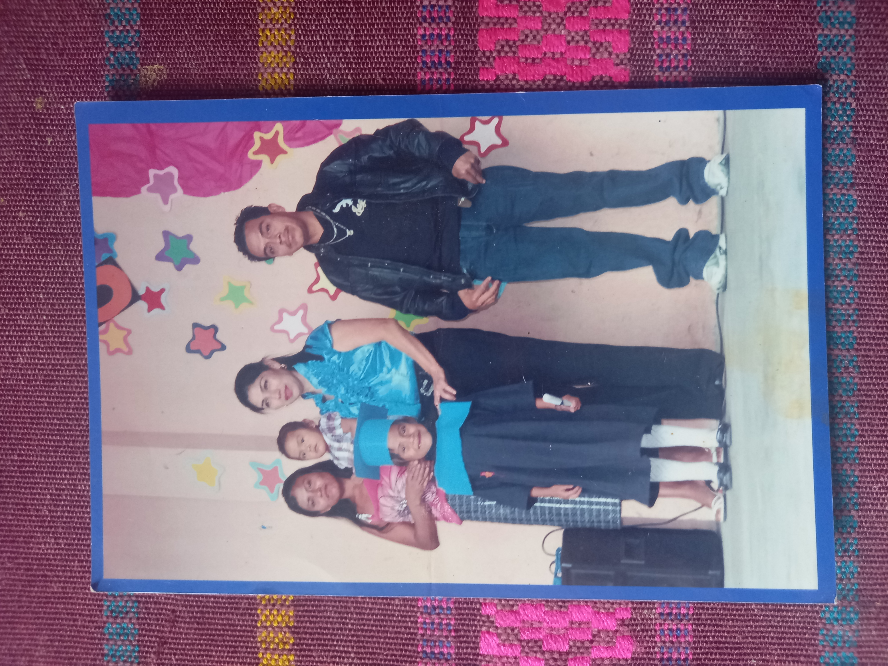
En mis años de primaria fue muy linda tuve demasiadas actividades culturales en fechas de independencia, gané varios reconocimientos y diplomas, participe en un curso de natación por dos años gané un diploma por participar, también tuve malos momentos me fracture la muñeca a la edad de 12 años por estar jugando, de igual forma me operaron en dos ocasiones por que me salió un quiste en el labio. Términe mi curso de mecanografía y salí abanderada uno de mis cursos favoritos ya que me encantaba ir a mis clases. Me gradué y terminó mi primera etapa académica.
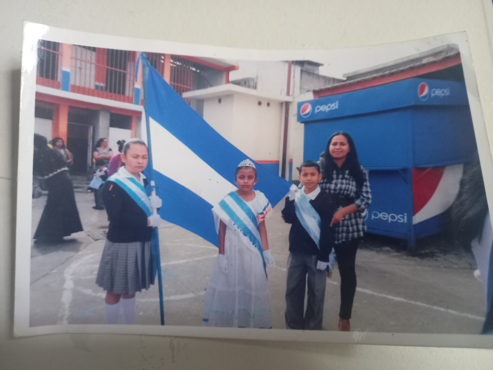 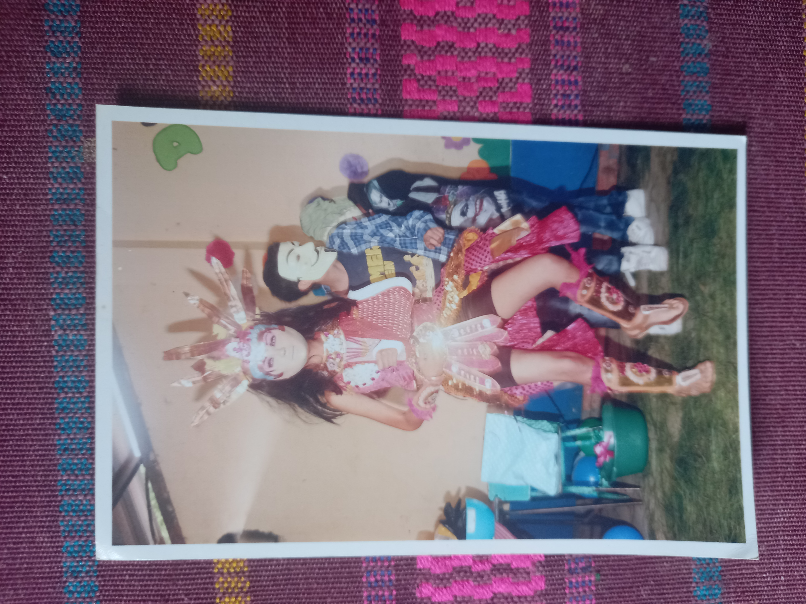 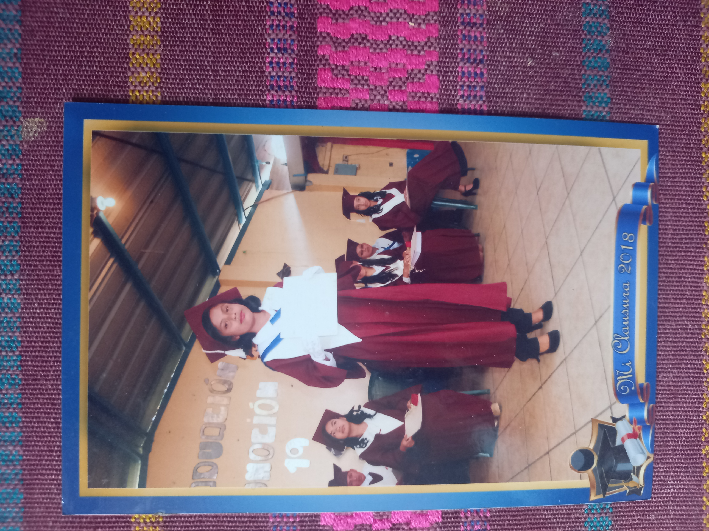Mi adolescencia no fue muy bonita tuve un bajo rendimiento en mis estudios a nivel básico, era muy rebelde con mi familia, pero principalmente con mi madre era muy rara la relación que teniamos, pero al final creó que ninguna tenía la culpa, la situación tal vez nos hizo actuar de esa manera. No me gusta contar mi adolescencia porque la considero una etapa muy tristre y me da vergüenza pensar que por peresosa no cumpli con mis metas estuve a nada de perder materias por no entregar tareas. Otro acontecimiento que me marcó mucho fue cuando mi hermana enfermó gravemente al punto de llegar de emergencias al hospital porque ya no podía respirar, me dolió mucho verla en una cama de hospital por una semana tratando de mejorar y luego de darle el alta saber que un simple error haría que ella tuviera otra recaída. Luego vino el COVID y cancelaron las clases yo estaba en tercero básico no hubo ninguna celebración porque no se podía, mi confirmación de igual manera fue con las normas que el Ministerio de Salud solic itaba, de igual manera mi carrera de bachiller fue en línea, no tuve prácticas, pero me fue bien sali con abanderada con un buen promedio. Si pudiera regresar el tiempo si cambiaría muchas cosas de mi etapa de adolescente.
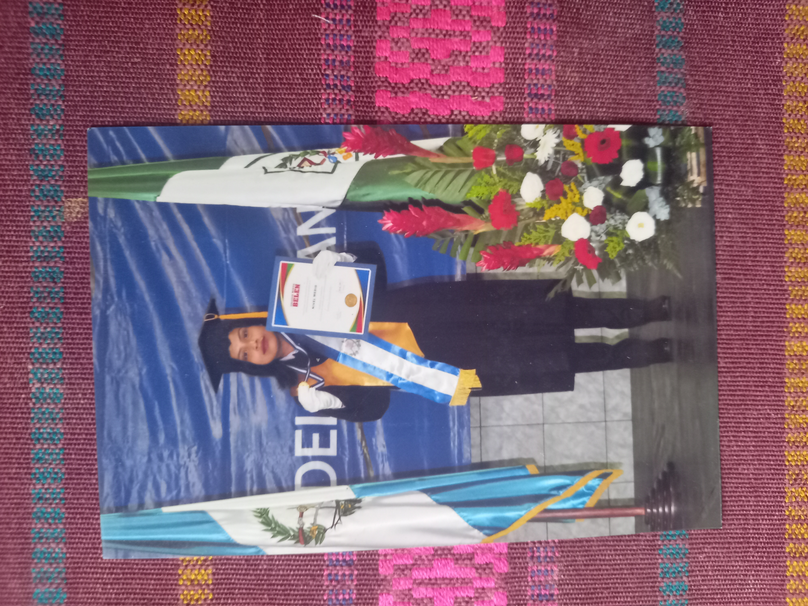 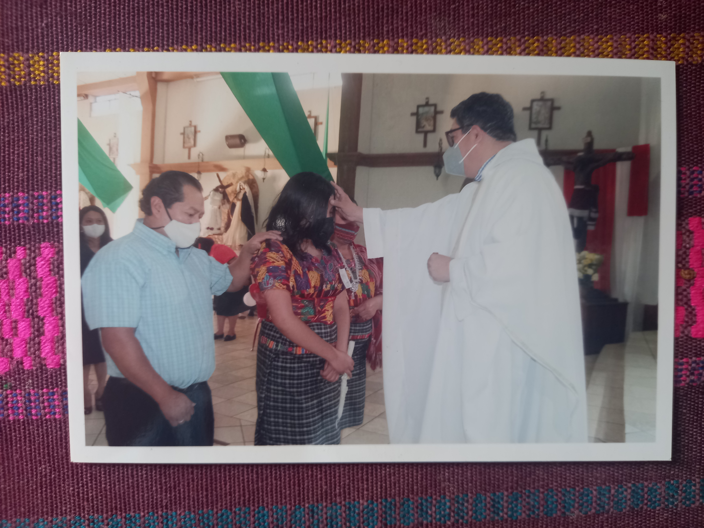Soy una persona que desde pequeña fui seria, mi madre me regañaba porque en ocasiones me encontraba con compañeros de la escuela y no los saludaba alegre, también soy muy miedosa no me gusta la oscuridad me da miedo, tampoco me gusta el contacto físico si son personas que les tenga confianza. Me gusta mucho comer y dormir. Actualmente aún sigo teniendo esa caracteristica de ser seria y enojona. 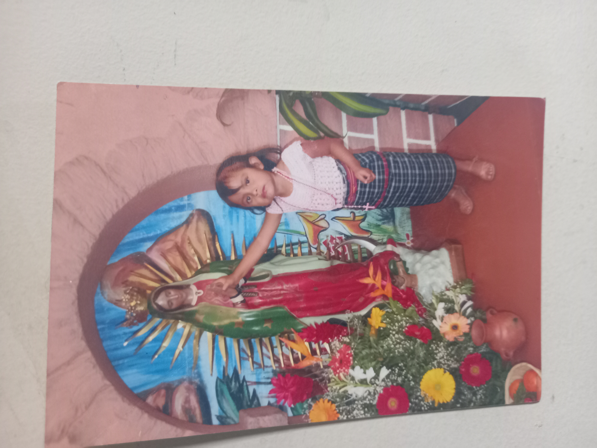
Mes gusta mucho el color morado es mi color favorito, también me gusto mucho las cositas pequeñas en colores pasteles. La comida de mi mamá es una de mis cosas favoritas y más si le digo que tengo antojos de ciertas comidas y ella me cumple el antojo. También me gusta mucho bailar, participo con mi papá y hermana en el convite que mi padre saca todos los años. Me encanta comer mangos verdes preparados con risitos. Pasar momentos con mi familia ya sea a la hora de la cena charlando sobre nuestro día o cuando bromeamos entre todos y las risas no paran.
Ser una personal muy debil y llorar por todo. No me gusta que las cosas no se hagan rápido. Tener un caracter díficil, enojarme por cualquier cosa.
Admiro mucho a mis padres, ellos son unos grandes padres que a pesar de haber tenido una niñez dura que ningun niño merece vivir, rompieron esas cadenas y nos estan dando una educación y amor que ellos también merecían. Han pasado por tantas cosas y aunque ellos quieran esconder sus malos momentos. Yo me doy cuenta que no importe el problema o la situaciónq que estemos viviendo si estamos los 4 vivos todo se vuelve más lindo. Mi hermana menor es otra persona a la que admiro mucho a pesar de ser más pequeña demuestra mucho compromiso con ciertas áreas de su vida y a pesar de todas las batallas que ha tenido que atravesar ella siempre tiene esa linda sonrisa y personalidad que nos cura el alma a mi familia y a mí. 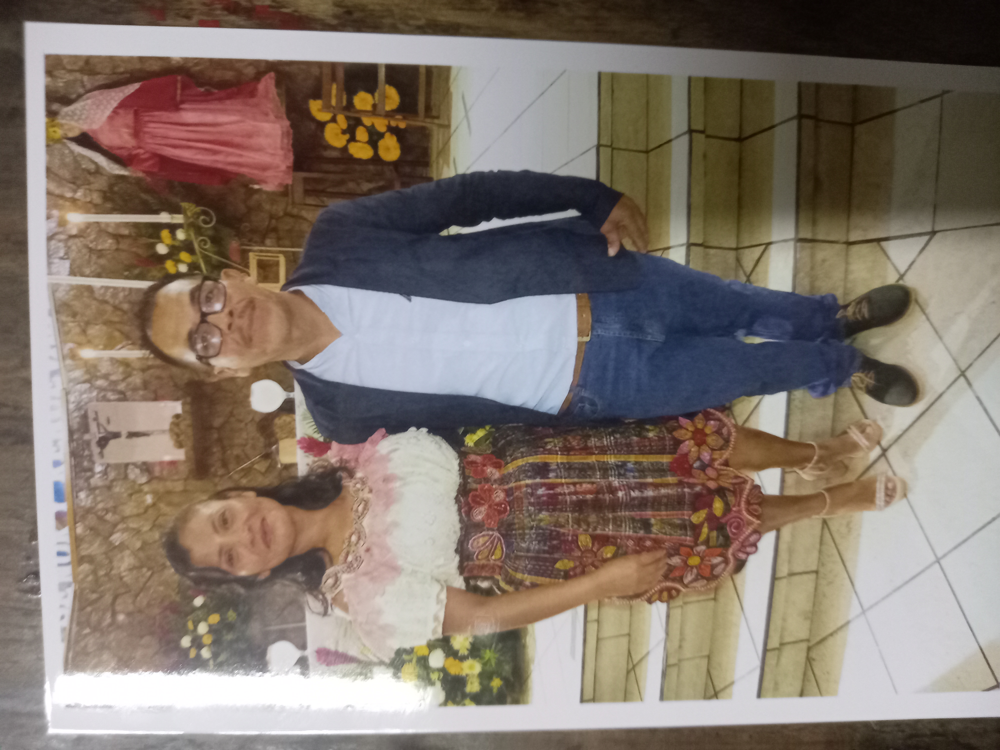